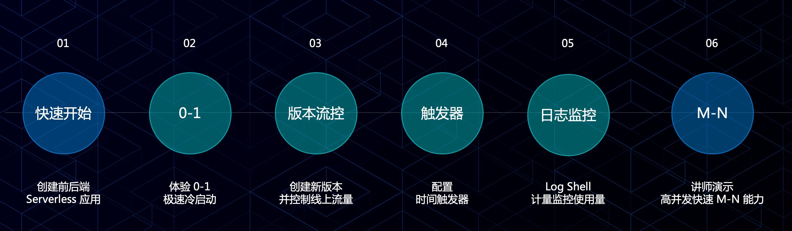
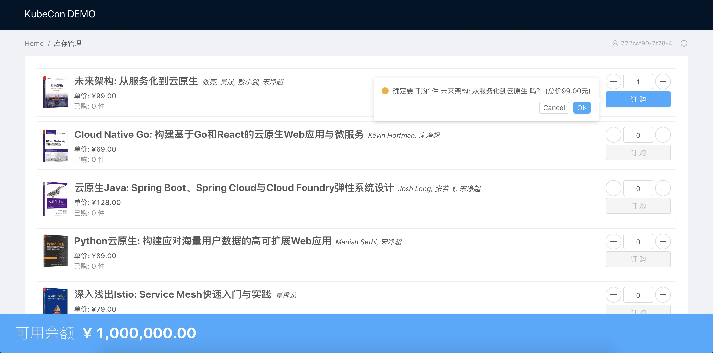

基于 Serverless 轻松构建云上应用
注意：使用该指南需要开通蚂蚁金融科技账号，请访问 蚂蚁金服科技官网。
作为云原生技术前进方向之一，Serverless 架构让您进一步提高资源利用率，更专注于业务研发。通过我们的 workshop，您 可以体验到快速创建 Serverless 应用、根据业务请求秒级 0-1-N 自动伸缩、通过日志查看器快速排错等产品新功能。
Workshop 操作内容
流程图

应用架构图

效果预览

Step 0: 前期准备
讲师演示
快速发布后端 Java 应用
快速发布前端 Node JS 应用
- 选择创建应用服务
- 创建应用，选择技术栈为 Node JS
- 上传代码包
prod-stockmng-v1.zip - 运行时选择
nodejs-0.0.1.1-pre - 入口方法可自动识别
- 端口： 3000
- 环境变量设置
BALANCEMNG_URL为后端服务的地址
Step 1: 查看 Serverless 应用服务
- 访问 Serverless 应用服务地址 https://sas.shared.cloud.alipay.com/
- 使用账号，密码登陆
- 选择 workspace：
- workspace0【user00-09】
- workspace1【user10-19】
- …
- workspace9【user90-99】
- 查看前端应用服务：kubectl frontend demo xx【00-99】
- 查看后端应用服务：kubectl backend demo xx【00-99】
- 查看目前后端应用的计算实例数量：0
Step 2: 查看 0-1 冷启能力
- 使用 Chrome 浏览器访问前端服务，域名为：*.kevinwang.cc
- 查看后端服务的计算实例数量的变化
讲师演示2
创建版本和流量控制
- 克隆前端应用，并创建新版本
- 上传代码包
prod-stockmng-v2.zip - 配置权重，路由 1:1 访问 V1 和 V2 版本
- 通过浏览器查看效果
Step 3: 查看版本和流量控制
- 打开前端应用服务
- 查看当前应用服务的 V1 和 V2 版本，和路由
- 通过浏览器访问应用查看流控效果
Step 4: 时间触发器
[](https://github.com/sofastack-guides/kc-serverless-demo#step-2-%E6%9F%A5%E7%9C%8B-0-1-%E5%86%B7%E5%90%AF%E8%83%BD%E5%8A%9B)
Step 5: Log Shell 和计量
- 打开 Log Shell
- 选择相应的应用服务，并输入日志地址/关键词
- 搜索查看应用服务日志，可全屏
- 打开计量信息
- 通过计量监控查看实例运行情况
讲师演示3
M-N 快速伸缩
- 打开应用服务
- 查看当前版本的计算实例限额 1-5 / 计算实例数量：目前为 1
- 开始压测模拟高并发，并同步查看计算示例数变化
- 快速从 1 变化为 4，演示结束
Step 6:【可选步骤】快速开始+测试执行
- 按照前文步骤，尝试自己创建一个新的前端应用
- 测试执行应用服务
快速发布前端 Node JS应用
- 选择创建应用服务
- 创建应用，选择技术栈为 Node JS
- 上传代码包
prod-stockmng-v1.zip - 运行时选择
nodejs-0.0.1.1-pre - 入口方法可自动识别
- 端口： 3000
- 环境变量设置
BALANCEMNG_URL为后端服务的地址
测试执行应用服务
- 选择测试执行
- 触发查看效果